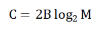
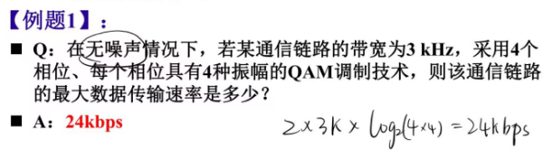
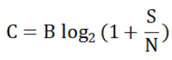
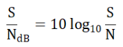
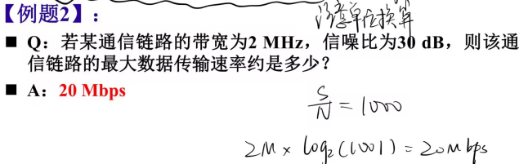
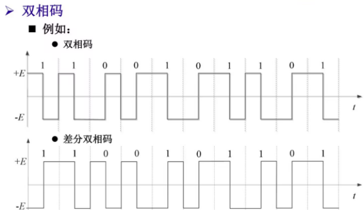

计算机网络概述
基本概念
定义：计算机网络是互连的、自治的计算机集合
互连：互联互通
自治：无主从关系
Internet
组成细节角度
全球最大的互联网络，ISP网络互连的网络之网络
数以百万计的互连的计算设备集合
主机=端系统：运行各种网络应用
媒介：通信链路
光缆、铜缆、无线电、卫星…
最重要的设备：分组交换设备
路由器和交换机
负责转发分组数据包
服务角度
为网络应用提供通信服务的通信基础设施
Web、VoIP、email、网络游戏…
为网络应用提供应用编程接口
支持应用程序连接Internet，发送/接收数据
提供类似于邮政系统的数据传输服务
网络协议
为进行网络中的数据交换而建立的规则、标准或约定
协议规定了通信实体之间交换的消息的格式、意义、顺序以及针对收到信息或发生的事件采取的动作
协议的要素
语法
数据与控制信息的结构或格式
底层是信号电平
语义
需要发出何种控制信息
完成何种动作以及做出何种响应
差错控制
时序
事件顺序
速度匹配
协议规范了网络中所有信息的发送和接收过程
Internet协议标准
RFC：Request For Comments
IETF：（互联网工程任务组）Internet Engineering Task Force
计算机网络分类
按照网络覆盖范围分类：
个人局域网PAN：10米
局域网LAN：1公里
城域网MAN：5-50公里
广域网WAN：几十-几千公里
按照网络使用者分类
专用网
公用网
按照网络拓扑分类
总线网络
星形网络
树形网络
网状网络
网络结构
网络边缘
主机（端系统）
位于“网络边缘”
运行网络应用程序，如Web,email
客户/服务器应用模型（C/S）
对等应用模型（P2P）
接入网络
功能：将网络边缘接入核心网络
用户关心：带宽、独占、价格
数字用户线路（DSL）
利用已有的电话线连接
对称传输，上下行速度一致
对应的有ADSL，非对称的数字用户线路
电缆网络
利用已有的电缆
HFC：混合光纤同轴电缆，非对称的传输
各家庭共享家庭至电缆头端的接入网络
不同于DSL的独占至中心局的接入
光纤到户（FTTH）
普遍采用的光纤通信传输方法
有源光纤网络AON
无源光纤网络PON
带宽大，线路稳定
无线接入网络
通过共享的无线接入网络连接端系统与路由器
无线局域网（LANs）
同一建筑物内
WiFi
广域无线接入
电信运营商（蜂窝网）
移动互联网
网络核心
互连的路由器网络
关键功能：路由+转发
解决的基本问题：如何实现数据从源主机通过网络核心送达目的主机（通过数据交换）
Internet结构：网络之网络
端系统通过接入ISP连接到Internet
接入ISP需要进一步互连
动态性很强，随时有接入和退出，无人能精确描述当前结构
ISP之间如何互连？
每个ISP直接彼此互联，开销太大
使用层级结构，将接入ISP连接到国家或全球ISP
可通过IXP（Internet Exchange Point）实现大ISP的互连
运营商可能运行其自己的网络，就近为端用户提供服务
内容提供商网络通常绕过一级ISP和区域ISP
数据交换
单交换设备会受到距离和规模的限制
N方链路问题
连通性问题
网络规模
可使用动态转接实现并行
数据交换的类型
电路交换
最典型网络：电话网络
三个阶段
建立连接（呼叫/电路建立）
通信
释放连接（拆除电路）
资源独占
通过多路复用共享中继线
将链路资源划分为资源片，分配给各路呼叫
各路呼叫独占分配到的资源片
资源片可闲置
报文交换
发送信息整体，以整体报文做信息交换单位
分组交换
分组：保温分拆出的一系列相对较小的数据包
需要报文的拆分与重组，产生额外开销
使用统计多路复用技术，按需共享链路（需要时占用）
允许更多用户同时使用网络，网络资源充分共享
适用于突发数据传输网络
资源充分共享
简单，无需建立呼叫
可能产生拥塞
分组延迟和丢失
需要协议处理可靠数据传输和拥塞控制
存储-转发
报文交换与分组交换均使用存储-转发交换方式
报文交换以完整报文进行
分组交换以较小分组进行
报文交换更省时间，但对路由器缓存要求高
分组交换相对于报文交换，要在整个报文的传输延迟基础上，加上最后一个分组到达最后一个路由器的时间
性能指标
速率
数据传输速率、比特率
b/s、kb/s、Mb/s、Gb/s
计算机网络中最重要的性能指标
往往指额定速率或标称速率
带宽
网络中指信道能传送的最高数据率
与速率单位相同
延迟
分组在路由器缓存中排队，可能产生丢包和时延
节点处理延迟
排队延迟
取决于路由器拥塞程度
传输延迟
发送一个分组需要的时间
传播延迟
信号在介质上的传输时间
时延带宽积
又称为以比特为单位的链路长度
传播时延×带宽
表征链路能够容纳的比特数
往返时间（RTT）
发送方发完数据到开始接到确认分组的时间
传播时延加接收方处理时延加回来的传播时延（注意，由于定义，这里不包括传输时延）
响应时间=RTT+发送数据的时间+接收ACK的时间
利用率
发送数据的时间/整个响应时间
丢包率
吞吐率
发送端与接收端之间传送数据速率
分为即时吞吐率与平均吞吐率
取决于木桶短板-瓶颈链路
计算机网络体系结构
是计算机网络的各层及其协议的集合
是一个计算机网络的功能层次及其关系的定义
抽象地、逻辑地、从功能上描述计算机网络结构：分层结构
分层结构
结构清晰，有利于识别复杂系统的部件及其关系
分层模块化，有利于系统更新维护
某一层的改变对其它层透明
有利于标准化
层数多，效率可能低
基本概念
实体：任何可发送或接收信息的硬件或软件进程
协议：控制两个对等实体进行通信的规则的集合，协议是水平的
任一层实体使用下层服务，遵循本层协议，实现本层功能，向上层提供服务，服务是垂直的
下层协议的实现对上层的用户是透明的
同系统的相邻层实体通过接口进行交互，通过服务访问点SAP交换原语，请求服务
OSI参考模型
7层：物理层，数据链路层，网络层，传输层，会话层，表示层，应用层
理论成功，市场失败
数据封装：增加控制信息
地址
差错检测编码
协议控制
物理层：负责比特传输
接口特性（机械特性、电气特性、功能特性、规程特性）
比特编码
数据率
比特同步（时钟同步）
传输模式（单工、半双工、全双工）
数据链路层：负责结点-结点数据传输
结点：主机或其它网络设备
与物理层相邻的两个直接结点间的数据传输
组帧，以帧作为数据单位
物理寻址：在帧头中加入物理地址（MAC地址）标识数据帧的发送端和接收端
流量控制：匹配发送和接收速度
差错控制：检测并重传损坏或丢失帧，避免重复帧
访问控制：决定哪个设备拥有链路（物理介质）控制使用权
网络层：源主机到目的主机数据分组传输
逻辑寻址：利用全局唯一逻辑地址（如IP地址），确保数据分组被送达目的主机
路由
转发
传输层：源-目的主机的（进程间）完整报文传输
分段与重组
提供端到端数据传输
SAP寻址：将完整报文交给正确进程
连接控制
流量控制
差错控制
会话层
对话控制
同步
最薄的一层
表示层
处理两个系统间交换信息的语法与语义
数据表示转化：转换为主机独立的编码
加密/解密
压缩/解压缩
应用层：支持用户通过用户代理或网络接口使用网络服务
FTP、SMTP、HTTP…
TCP/IP模型：IP Over Everything
市场成功而理论不完善
5层参考模型：结合OSI和TCP/IP的优点
物理层：比特传输
数据链路层：相邻网络元素（主机、交换机、路由器等）的数据传输
组帧并传输
以太网、802.11（WiFi）、PPP
交换机
网络层：源主机到目的主机的数据分组路由与转发
将段封装到数据报中并传输
IP协议、路由协议等
路由器
传输层：进程-进程的数据传输
消息分段并传输
端到端的数据传输
TCP、UDP
应用层：支持各种网络应用
FTP、SMTP、HTTP
网络发展历史（略）
计算机网络-物理层
物理层基本功能
功能：在连接结点的物理介质上实现比特流传输
比特编码
数据率
比特同步
接口特性
机械特性：接线器的形状、尺寸引线数目和排列、固定和锁定装置等
电气特性：接口电缆的各条线上出现的电压范围等电路特性
功能特性：某条线上出现的某一电平的电压表示何种意义
规程特性：对于不同功能的各种可能事件的出现顺序
时钟同步
传输模式
单工、半双工、全双工
物理层协议需要约定数据终端设备-数据电路终结设备-物理介质间的接口特性
数据通信基础
数据通信系统：信源（消息转换为信号的设备）、发送设备、信道、噪声、接收设备、信宿（信号转换为消息的设备）
常见术语：数据、信号、模拟/数字的、码元（信号基本波形）、频带（信号频率范围Hz）、带宽（这里指能量的主要集中范围，是一个宽度值）
异步通信：发送器和接收器分别使用各自独立的时钟
只需在每个字符（通常是8bits）传输期间保证时钟同步，两个字符间时钟不必同步；每个字符传输开始重新同步时钟
过程：空闲状态下，接受方只需要检测信号跳变，观测到就准备开始接收，采样一个字符长度后回归空闲状态，重新开始检测
由于时钟不同步，只能传一个字符，否则错误的积累可能出现问题
简单，整体低成本
开销大，每个字符有2-3位开销
适合短距离、低速率、字符键间隔时间大的场景（如键盘）
同步通信：两者时钟必须同步
实现方式
使用单独的时钟线
适合短距离
时钟信号损伤
将时钟信号嵌入到数据信号中（更常用）
曼彻斯特编码（见后文）
载波频率
比异步通信更加高效，开销少
适合大数据块传输
模拟通信/数字通信
信道中传输的是模拟信号/数字信号
信源编码
信源产生的模拟数据在数字通信系统中传输
连续->离散
典型编码：PCM
采样：对模拟信号取一系列时间上离散的采样值，实现时间上的离散化
量化：使采样值在取值上离散化
编码：将量化后的采样值用一定位数的二进制数码表示
扩频：将数据的传输扩展到更宽的频带上，制造干扰使通信不易被窃听
跳频：载波信号频率在一组频率上（某种规律）随机跳变
直接序列扩频：通过传输多个比特表示原始信息的一个比特
物理介质
导引型传输介质：有线和部分无线介质
架空明线：易受天气和外界电磁干扰，对外界噪声敏感，带宽有限
双绞线：主要用于基带传输
屏蔽双绞线：绝缘层外带一层屏蔽层
非屏蔽双绞线（更常用，因为便宜）
同轴电缆：主要用于频带传输
光纤：光的全反射
非导引型传输介质：
自由空间：无线电传播途径，不同频段有不同传播特性
地波传播：频率较低（2MHz以下）的电磁波趋于沿地球表面传播
在低频和甚低频段可以超过数百米或数千公里
有一定的绕射能力
天波传播：频率较高的电磁波会被电离层反射
电离层的密度和厚度随时间随机变化
电磁波可传播10000km以上
随参信道
视线传播：频率高于30MHz的电磁波将穿透电离层，沿地面绕射能力也很弱
通常采用视线无障碍的点对点直线传播
可以设立地面中继站或卫星中继站进行接力传输
信道与信道容量
信道分类
狭义信道：信号传输介质
广义信道：信号传输介质和通信系统的一些变换装置，如发送、接收设备、天线、调制器等
信道传输特性
恒参信道
对信号幅值产生固定的衰减，对信号输出产生固定的时延
理想的恒参信道是一个理想的无失真传输信道
各种有线信道和部分无线信道（如卫星链路）属于恒参信道
随参信道
信号的传输衰减和传输时延随时间随机变化
存在多径传播现象
许多无线信道都是随参信道（如天波无线电）
信道容量：使信道无差错传输信息的最大平均信息速率
奈奎斯特信道容量公式：理想无噪声的信道容量

其中C为信道容量，单位为b/s；B为信道带宽，单位为Hz；M为进制数，即信号状态数

香农信道容量公式：有噪声信道的信道容量

其中S/N是信噪比，通常以分贝为单位描述，注意单位转换


信道共享-多路复用
多路复用：将资源划分为资源片，分配给各路呼叫，各路独占分配到的资源片，资源片可能闲置
频分多路复用（FDM）：用户占用不同频率带宽
时分多路复用（TDM）：用户占有不同时隙（时分复用帧）的相同频带，时隙周期性出现
波分多路复用（WDM）：光的频分复用（利用光调制）
码分多路复用（CDM）：每个用户分配唯一的码片序列
码片序列中0用-1表示，1用+1表示
各用户使用相同频率载波，利用各自码片序列编码数据
编码信号=原始数据×码片序列
如发送数据比特1则发送码片序列，发送0则发送码片序列的反码
保证各用户码片序列相互正交（解码时互相无影响，不属于同一用户就得0）
解码时对码片序列与码片信号做内积即可
基带传输
基带信号：信源发出的原始电信号
模拟信源/数字信源->模拟基带信号/数字基带信号
往往带有较多低频甚至直流成分
基带传输：直接在信道中传送基带信号
基带传输系统：实现基带传输的系统（以太网就是一种基带传输系统）
数字基带传输/数字基带传输系统：在信道中直接传输数字基带信号
数字基带传输系统
基带信号适合在低通特性的有线信道中传输，通常不适合在无线信道中直接传输
典型数字基带信号码型
单极不归零码：（电压单极性，一周期内不归到0）连续多个0或多个1
易于产生，但不适合长距离传输
电压长期不变，产生直流分量积累损害通信系统，且不利于接收方提取信号
双极不归零码：双极性
单极归零码：一个周期内需要归到0
占空比：码元不为零的时间占一个码元周期的百分比
周期内存在跳变，有利于接收方获取时钟周期
双极归零码：双极性的归零码
差分码：又称相对码，利用相邻脉冲跳变情况编码
例：相邻脉冲有电平跳变表示1，无跳变表示0（也可以其他定义）
AMI码：信号交替反转码
信息码中的0编码为AMI传输码中的0（零电平）
信息码中的1交替编码为AMI传输码中的+1（正脉冲）和-1（负脉冲）
针对传输设计的编码方式，可以避免直流分量积累
有利于差错检验
双相码/曼彻斯特码：用编码表示电平跳变
只有正负两种电平
正电平跳到负电平表示1，负电平跳到正电平表示0
每个比特持续时间的中间时刻进行电平跳变，便于提取定时信息
差分双相码/差分曼彻斯特码
与双相码相同，每个比特持续时间的中间时刻进行电平跳变，但该跳变仅用于同步
利用每个比特开始处是否存在电平跳变编码信息：
有跳变表示1，无跳变表示0（也可反着写）
nBmB码：将n位二进制信息码作为一组，映射成m位二进制新码组，m>n
m>n，m位新码组中会有冗余，可将冗余的码作为禁用码，用于检错

频带传输基础
频带传输
基带信号具有低通特性，可以在具有低通特性的信道中进行传输
但许多带通信道（如无线信道）不具备低通特性，不能直接传输基带信号
需要利用基带信号去调制与对应信道传输特性相匹配的载波信号，通过载波信号传递信息
模拟调制：利用模拟基带信号调制载波
数字调制：利用数字基带信号控制（或影响）载波信号的某些特征参量
数字调制系统
频带传输系统常选择正弦波信号作为载波
y(t)=acos(2πft+φ)
二进制数字调制：2ASK，2FSK，2PSK、2DPSK
二进制幅移键控（2ASK）：利用二进制基带信号控制载波信号的幅值变化
y'(t)=s(t)cos(2πft+φ)，s(t)为单极不归零码信号
s(t)取1时为正常波形，s（t）取0没有波形，从而实现控制幅值变化
二进制频移键控（2FSK）：利用二进制基带信号控制载波信号的频率变化
选择两个不同频率的载波，根据比特序列，分别使用两个载波
二进制相移键控（2PSK）：利用二进制基带信号控制载波信号的相位变化
根据比特序列选择不同的相位角即可（一般取φ和φ+π）
二进制差分相移键控（2DPSK）：利用相邻两个码元载波间的相对相位变化表示数字基带信号的数字信息
性能比较
频带利用率：2ASK、2PSK、2DPSK的频带利用率相同；2FSK频带利用率最低
误码率：2PSK解析最不容易出错（容易理解，相位变化总是比频率和幅值更好发现）
相同信噪比下，2PSK误码率最低，2ASK误码率最高
2PSK抗噪声性能优于2FSK，2FSK优于2ASK
对信道特性的敏感性：
2ASK对信道特性变化比较敏感，性能最差
2PSK、2FSK对信道特性变化不敏感
多进制数字调制：提高每个码元信息量，每个码元调制多个比特信息
在确定带宽与频带利用率的情况下，提高数据传输速率的有效方法
数据传输速率（比特率）与码元传输速率（波特率）
多进制数字调制需要更大的信噪比，发送端需要增大信号的发送功率
正交幅值调制QAM：幅值相位联合键控
QAM的调制信号的幅值和相位均受基带信号调制
由两路相互正交载波经调制后叠加而成，分别称为同向信号（I）和正交信号（O）
优点
具有高频带利用率，可以自适应调整调制速率
抗噪声能力强
调制解调系统简单，应用广泛
物理层设备
中继器：比特再生
集线器（Hub）：多端口中继器
所有端口内部物理连通
未完待续……